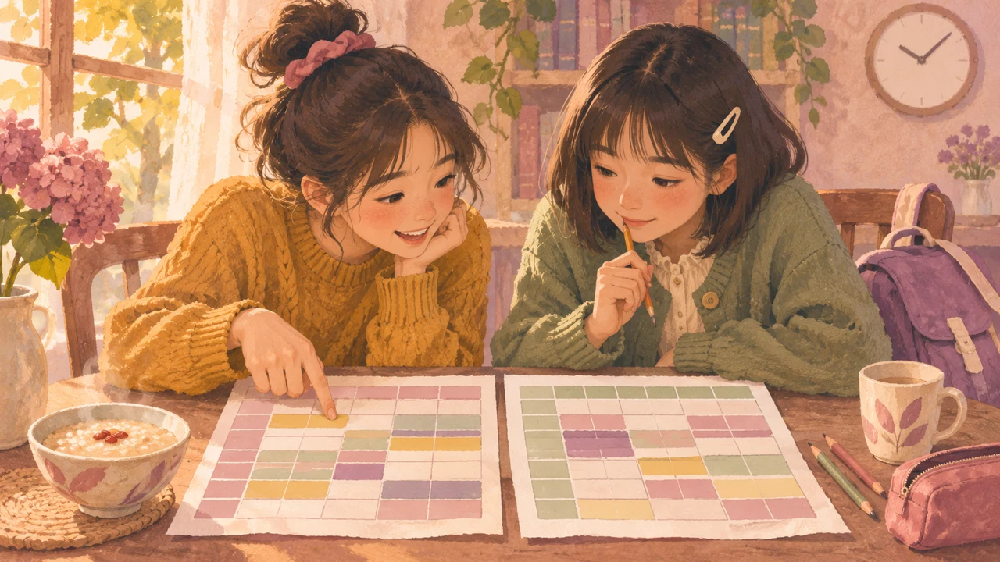

日常起居 · Урок Кати
Два дня — два расписания
У Кэ-кэ и Сяоюй разные дни. Сверь их голосовые дневники, найди отличия и расскажи про себя.
Собери день по картинкам
Послушай короткую запись. Нажимай на картинки в том порядке, в котором услышишь действия.
Два голосовых дневника
Сначала послушай обе записи целиком. Затем найди время для каждого дела. Можно переслушивать и делать пометки.
Проверь сообщение подруги
Сяоюй перепутала две детали понедельника. Послушай её сообщение и запиши или скажи исправление.
Свериться
可可早上六点起床。六点半吃早饭。
Свериться
可可下午两点半回家。四点做作业。
Возьми интервью
Послушай три вопроса. Ответь по очереди про свой день, затем задай один вопрос преподавателю.
Фразы для опоры
你几点起床？你几点吃午饭？你几点回家？
我中午十二点吃午饭，晚上六点吃晚饭。
Для рассказа соединяй часть дня, время и действие. Например, 我下午两点半回家。
交通工具 · Транспорт
Как ты добираешься до школы?
На чём Сяоюй поехала в школу?
Сначала послушай всё сообщение. Время завтрака тебе уже знакомо. Найди по смыслу, как Сяоюй добирается до школы.
Подсказка к сообщению
今天早上，我七点吃早饭。七点半，我骑自行车去学校。你怎么去学校？
骑自行车 · qí zìxíngchē · ехать на велосипеде.
你怎么去学校？
Открой фразу про свой способ добраться до школы. Послушай её и скажи вслух.
Соедини два действия: во сколько завтракаешь и как потом идёшь или едешь в школу.
Послушать образец связного ответа
我早上六点半吃早饭，然后坐公共汽车去学校。
Я завтракаю в 6:30, а потом еду в школу на автобусе.
Сценарий для преподавателя
10 минут · разогрев. Собрать порядок действий по короткой записи и пересказать его с 先 и 然后. Подхватить знакомые 起床, 吃早饭 и 睡觉.
20 минут · сравнение дневников. Первый проход на общий смысл, второй для заполнения времени. После сверки Катя формулирует два отличия полными фразами.
15 минут · речь. Сменить роли после вопросов. Уточнить 吃午饭 и 吃晚饭 на знакомом порядке слов. Попросить назвать одну деталь, которой не было в записи.
15 минут · мостик к транспорту. Начать с сообщения Сяоюй, связав уже знакомое время завтрака с новой дорогой до школы. Затем сравнить 坐公共汽车, 骑自行车 и 走路 и дать Кате ответить про себя.